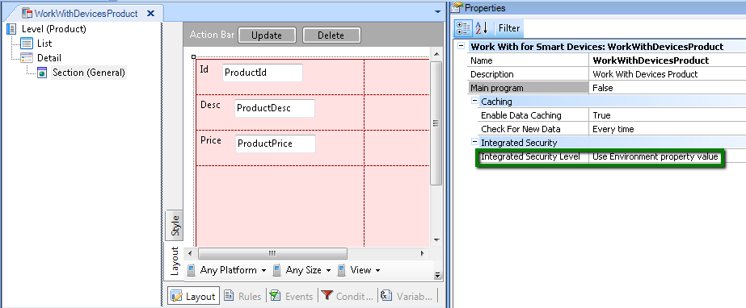
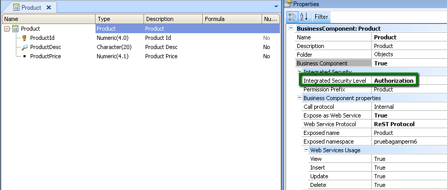
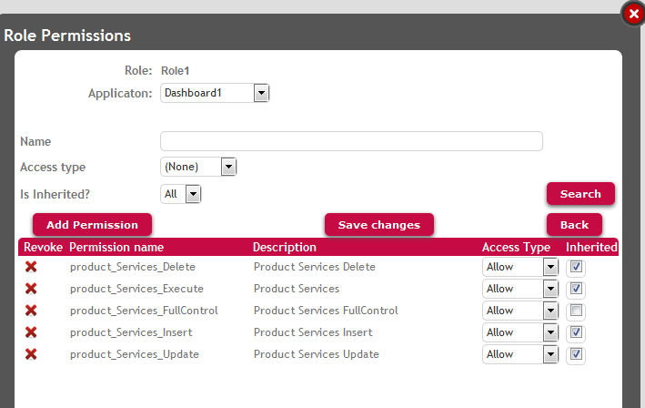
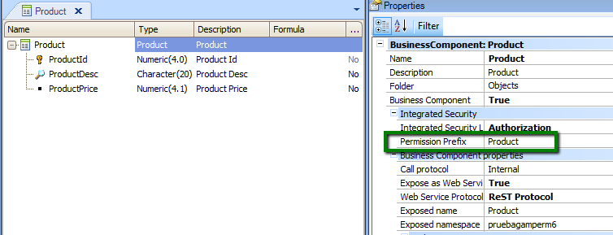
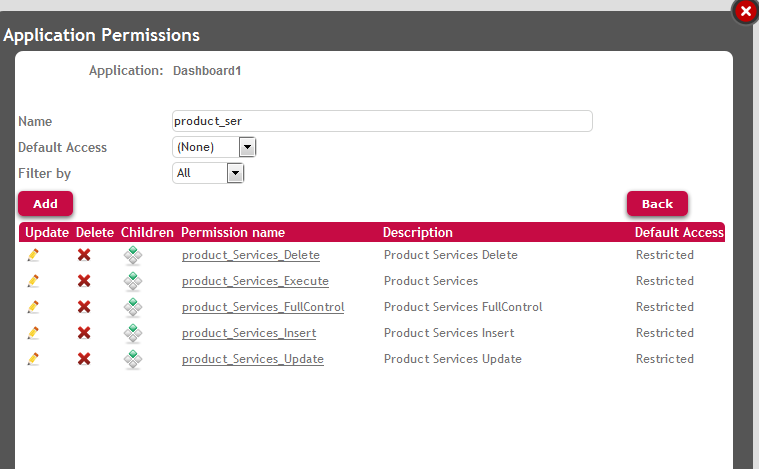
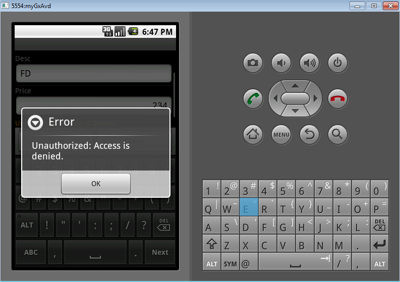

Suppose we have a Smart Devices Application which allows users to see all the products a company distributes.
The application will be used by employees of the company (who have authorization to add, update, or delete products, and change their prices), and will be used by users who are interested in buying those products and are authorized just to navigate through the products list.
Objects of the application:
-
Dashboard1 (Menu object) which has the following item:
-
WorkWithDevicesProduct (WWSD object which lists all the products). By selecting one item of this list you can view the detail of the product; and update, or delete the product if desired. There is also the possibility of adding a new product by using the menu of this object.
-
Product Transaction (Business Component).
Problem Description
The application as a whole requires authentication, so only authenticated users can access the WorkWithDevicesProduct item of the Menu object. When clicking this option, authentication is required. As a consequence, any authenticated user can display the products list and see the product detail by clicking on any item of the list. That is to say that no special permission is required to execute "WorkWithDevicesProduct", because authorization is not going to be checked.
But in order to add a new product, update or delete an existing product, authorization is required.
So only authorized users can execute actions (add, update, delete) over the "Products" Business Component.
Solution
The Default Integrated Security Level Property value at version level can be set to "Authentication", if only specific objects need authorization, and are the minority.
The property Integrated Security Level of the WorkWithDevicesProduct object is set to "Use Environment property value" = Authentication.

Figure 1.
But we need to set Integrated Security Level Property of "Product" Transaction to Authorization value.

Figure 2.
Define a role, named "Role1" in the example, with the following permissions:

Figure 3.
Look at figure 3 to see the permissions defined. Our goal is to define permissions in order to allow / deny users the privilege to execute the Product Business Component modes (insert, update, delete), regarding that this Business Component is executed through a SD application (not a web application).
In order to give the user permissions to insert a new product, you need to give to him product_services_insert permission, where "product" is the Permission Prefix Property value set in Product transaction (see figure 4).
See How to: Add a permission to a role for information on how to add permissions to roles.

Figure 4.
The same idea with update and delete permissions, "product_services_update" and "product_services_delete" permissions need to be defined.
These permissions ("product_services_insert", "product_services_update", and "product_services_delete") requiere "product_services_execute" permission (that is to say, if this permission is not allowed, none of the others can be).
"product_services_execute" is the permission to GET the Business Component data.
Take into account the Default Permission Access Type at application level, as shown in figure 5.

Figure 5.
Conclusion
As a consequence of this configuration, only authenticated users can access the WorkWithDevicesProduct, but no particular authorization is needed to execute it. So, any authenticated user can display the list of products and select an item to view the detail.
Nevertheless, only users with "Role1" role can update, delete, or add new products. If another user tries to execute any of these actions, the following message appears in Android applications:

Figure 6.
To be strict, as these permissions are restricted at application level (see figure 5), only users who are assigned to roles where these permissions are allowed, will have rights to execute the different modes of the Business Component; unless they have any role where any of these permissions is denied (see Permission Access Type for more details).
Important note:
We define "<BusinessComponentPermissionPrefix>_services_mode" permissions, because the transaction in case of SD applications is executed as a Business Component exposed as REST web service. See Automatic Permissions generated by GeneXus for more details.
GAM Roles
GAM Authorization Scenarios
|